Tuesday
6:30pm to 8:30pm
- Place
- Jericho Community Centre
- Address
- 33a Canal Street, Oxford, OX2 6BQ
- Price
- £10 per session
Tuesday venue
Jericho Community Centre
Tuesday adult classes take place at Jericho Community Centre.
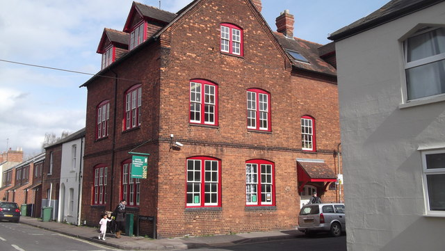
Beginners are welcome
Move, play music, sing, and learn in a friendly community class. Oxford Capoeira Society welcomes adults and children, from complete beginners to experienced students.
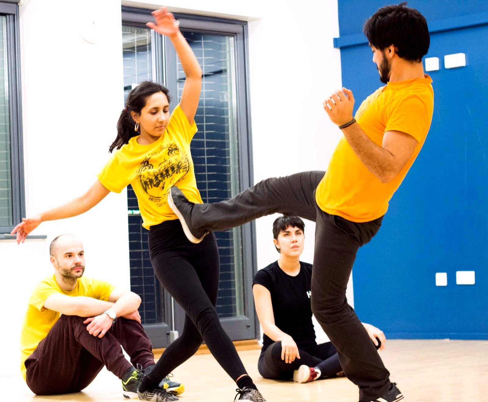
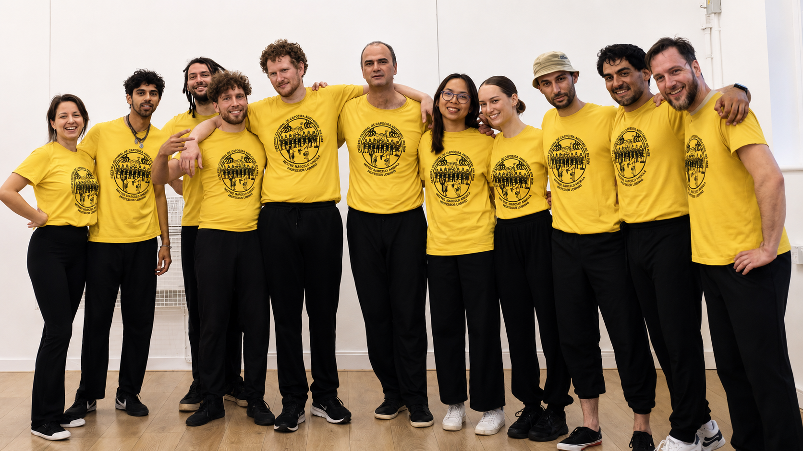
Classes
Choose the class that works for you. All classes are beginner-friendly, and new students are asked to message us before coming so we know to expect you.
Adult monthly pass: £45 for all Tuesday, Thursday, and Friday adult classes in the month. Bank transfer details can be shared after you get in touch.
What to expect
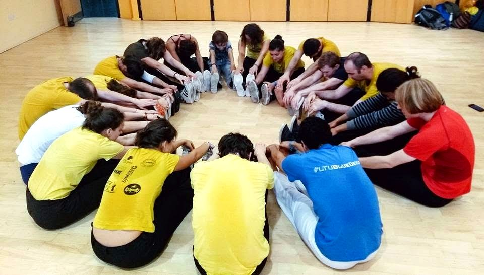
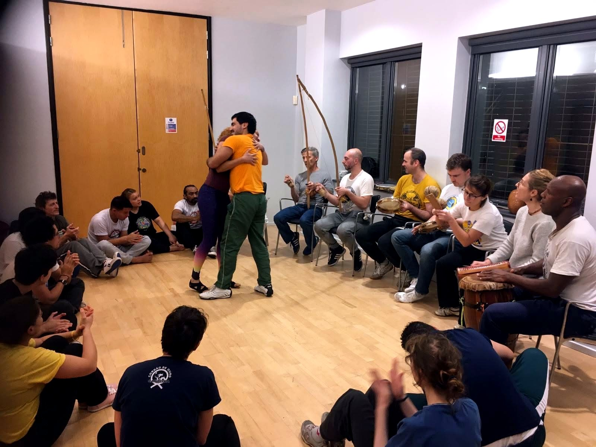
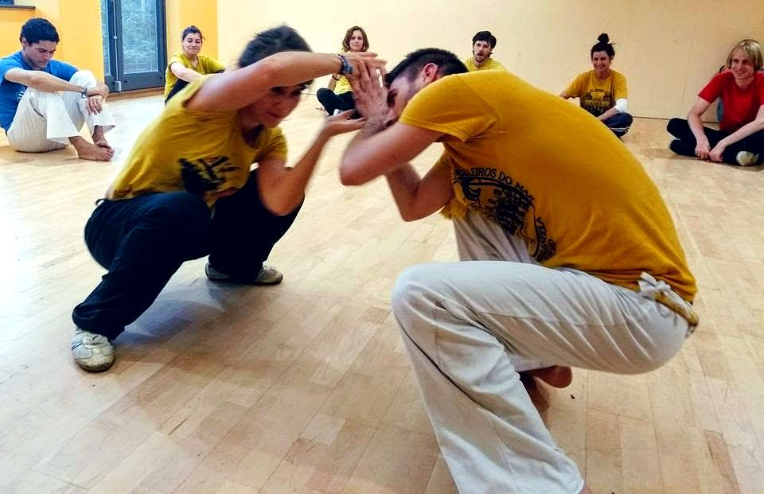
Classes include Capoeira Angola movement, music, singing, and traditional instruments. You will learn at a steady pace and take part in the cultural side of the practice as well as the physical training.
Beginners are welcome in every class. You do not need previous capoeira, dance, martial arts, or music experience before you start.
The physical level can be adapted to each student. You can build strength, balance, coordination, and confidence gradually, with guidance from the teacher.
Wear a comfortable T-shirt, long sports trousers, and comfortable trainers that allow you to move easily. Bring a bottle of water.
About
Oxford Capoeira Society is a project developed in Oxford through Angoleiros do Mar (angoleirosdomar.com), an international Capoeira Angola group led by Mestre Marcelo Angola (Instagram). Rooted in the Capoeira Angola tradition of Bahia, Angoleiros do Mar has worked for more than 20 years to keep this practice alive in Oxford.
Our classes bring together movement, music, singing, history, and community. We teach Capoeira Angola with respect for its roots, its teachers, and the people who share the roda. The group welcomes students, professionals, local residents, families, and anyone curious to learn.
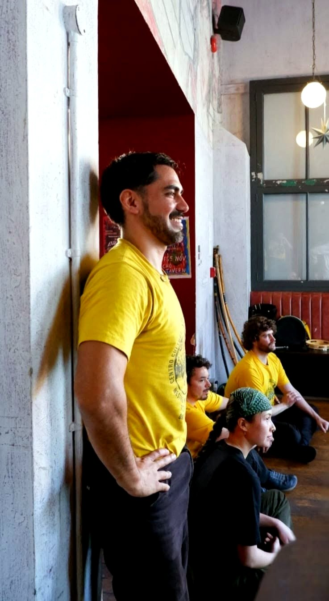
Teacher
Mauricio Jiménez Mota has 16 years of experience in Capoeira Angola under the guidance of Mestre Marcelo Angola, leader of Angoleiros do Mar, originally from Ilha de Itaparica, Bahia.
Events
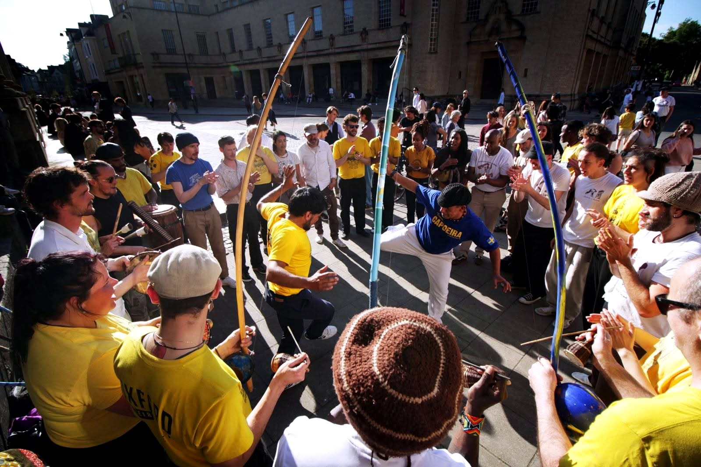
Rodas
Roda moments bring movement, music, singing, and community into shared public and cultural spaces around Oxford.
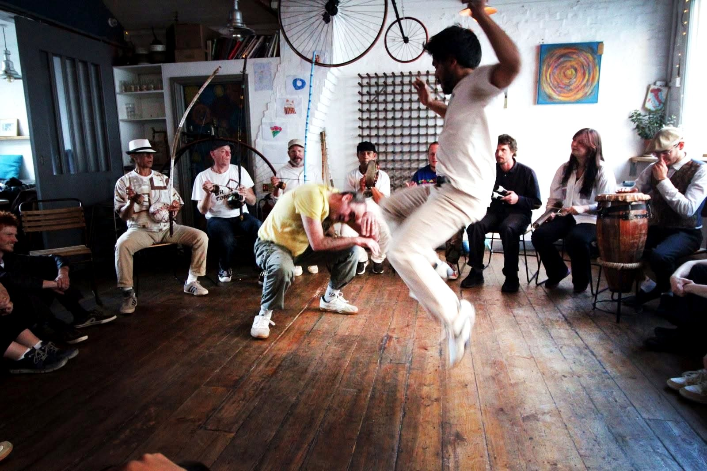
Workshops
Workshops give students time to deepen movement, music, history, and roda practice with experienced teachers.
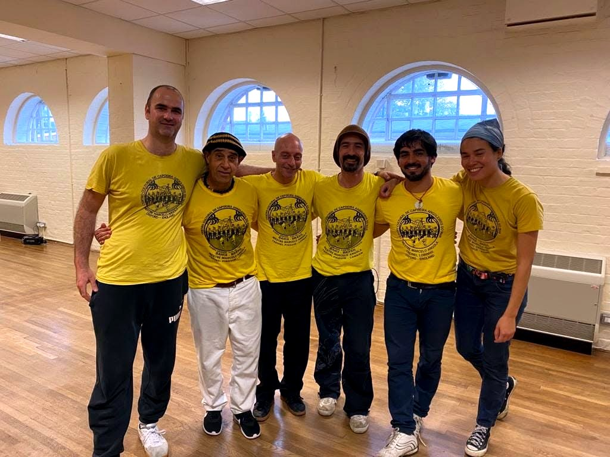
Community
Oxford Capoeira Society connects students, families, visiting teachers, and friends through regular classes and events.
Upcoming workshops, rodas, and special classes will be listed here when dates are confirmed.
Gallery
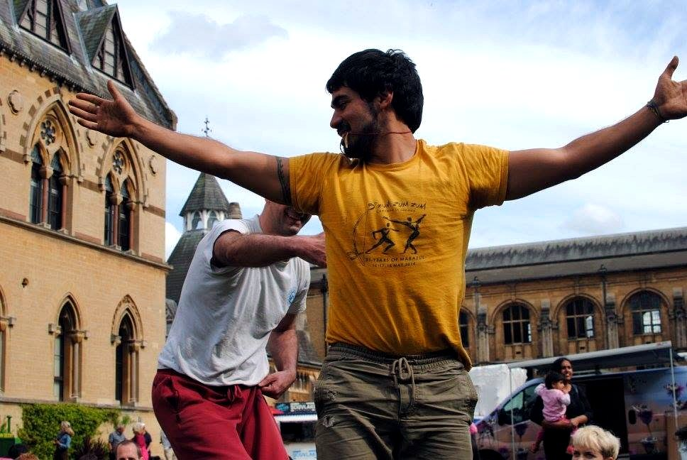
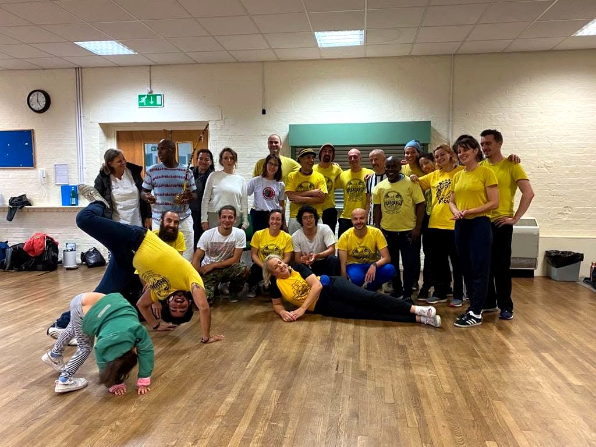
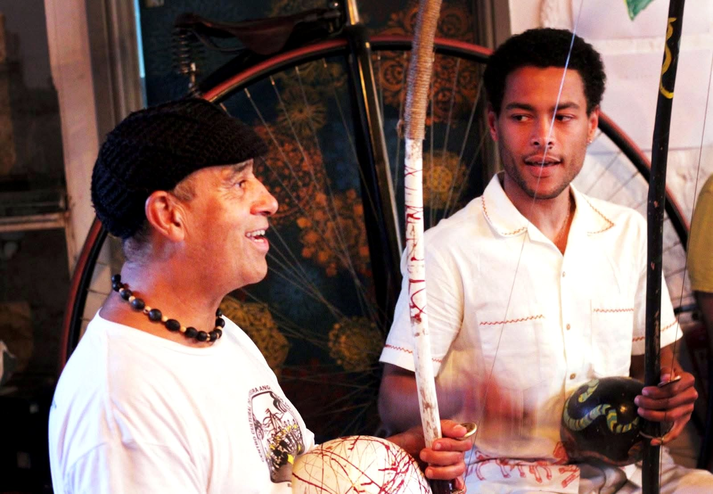
Schools
Schools can contact Oxford Capoeira Society to arrange Capoeira Angola workshops, cultural presentations, or movement and music sessions for students.
Sessions introduce students to Capoeira Angola through movement, rhythm, singing, instruments, history, and group participation.
First class
Wear a comfortable T-shirt, long sports trousers, and comfortable trainers that allow you to move easily. Bring a bottle of water.
All levels are accepted, from beginners to experienced students. You do not need any previous capoeira experience.
Contact
Please contact us before attending your first class. All sessions are adaptable and suitable for all levels, so you can join any regular class as a beginner.
For the quickest reply, send a WhatsApp message with the class you would like to try and whether you are coming as an adult, parent, or school contact.